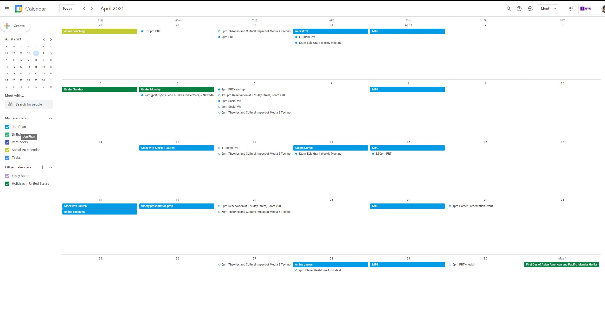

Week 10/11 cont. reading and guest responses
VR accessibility problems and harrassment readings
For the accessibility reading I never thought about being uncomfortable in my own skin and how it could really liberate those who are. I can see how it can be especially important with those with disabilitys and how ironicly terrible it is that they can't experience VR if it isn't accessibile. When they talked about how they could only play the one game because it was compadible with another type of controller, it kind of made me think about how people used to cheat at wii sports games in the past. I think it is important for designers to make these games modible or compadible with different systems so that at least people who are will can put the time in to making the games work with those with disabilities. I think one of the biggest issues is that games are expensive to make and designinng for specific groups with all unique disabilities is costly and challenging. I knew one guy back in highschool who was born with a deformation in his hands, even with this disability he turned out to be a really good gamer even if he held the controller completly differently than anyone else. I wonder if it's because he would spend more time play games because of his disability and grew to be able to master his special play style, but either way, not everyone is fortune to overcome like him. I think that it is really good that they are making progress in devices that make it more accessible for low vision. I've played around with the hand tracking with Occulus and think thats a really great step in the right direction too for those that can't hold controllers. With harassment in VR, you sort of get the unfiltered behavior of terrible people but with more immersion making those actions magnified by a lot. You get this sort of behavior seen all the time in online multiplayer games, chat rooms, and social media. The thing is, they should impliment all the rules and regulations that have worked in those systems into the VR ones. It is a new platform so it's unfoutunate that the early adopters had to face these issues. The immersion factor where things feel more real than a 2D screen really makes the urgency to put up these protections higher. The psychology of the illusory self is also really interesting, its almost like a hyper sympathy system where you really embody the avatar. I can see how this gets even more intense when hyptic feedback becomes more advanced in the future. I think that it's important that people shouldn't have to be on edge all the time like how they feel unsafe in a sketchy neighborhood late at night. I think the ideas they put into practice to protect yourself are interesting, personally I end up just playing games with my friends or muting all other players. Without the boundries of real life, it is cool that they can find solutions like putting up invisible force fields to keep personal space enforced and keeping out all the baddies. I'm glad that they are coming up with inovative solutions for these problems.Nick Katsivelos
I thought that Nick's presentation was pretty good, it did feel a little bit like a product commercial but I do find value in being exposed to technology that I didn't know about. I think that when you didn't know you could do something or know something existed it can really hold you back. When you learn about something you didn't know you didn't know then you can really expand your imagination and the possibilities of creativity. Besides this VR class, I'm also in an AR class so learning about new XR tech is really cool to me. I think I tend to be very split down the middle when it comes to tech and art so this like this really fit me. One this that is a little silly for me though is that I'm a little biased against using Microsoft products. Besides windows the operating system and maybe visual studio, they usually don't seem too sucessful with their hardware or software. Just take a look at a microsoft store in the mall, the xbox that's losing marketshare, bing, or halolens. So I'm not super sold on the Azure ecosystem but its good to know it exists and that they are trying to expand on that technology.Social Calendar
 For week 11, I was able to meet up with Lauren to help her out with setting up her door functionality in Unreal Engine as well as help her set up source control. This week I also met up with my team member for Theory class where we spent a bunch of hours making up a presentation on our topic that week which was about video games. I also was able to make it for my weekly online card gaming night as usually, it really had become a nice way to wined down a little for the week. Planet Real Time had also been put on a bit of a hold due to how busy me and Todd were getting towards the end of the semester.home
while (!deck.isInOrder()) {
print 'Iteration ' + i;
deck.shuffle();
i++;
}
print 'It took ' + i + ' iterations to sort the deck.';